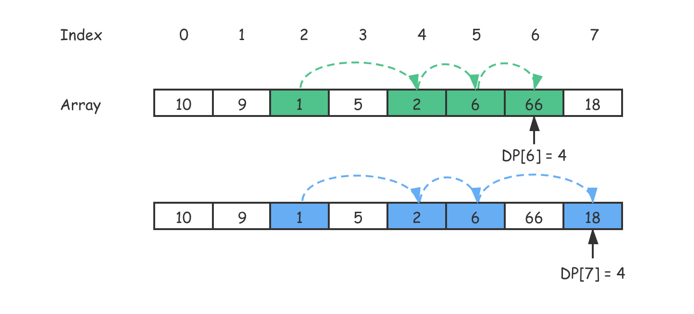
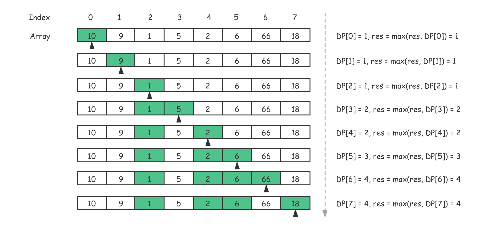
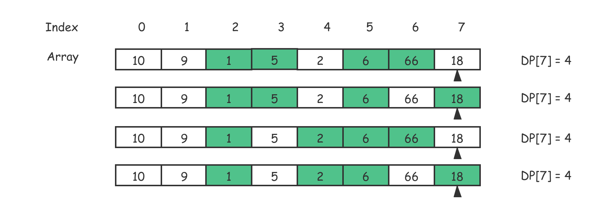

- 00 导读 动态规划问题纷繁复杂，如何系统学习和掌握它？.md.html
- 00 开篇词 为什么大厂都爱考动态规划？.md.html
- 01 硬币找零问题：从贪心算法说起.md.html
- 02 暴力递归：当贪心失效了怎么办？.md.html
- 03 备忘录：如何避免递归中的重复计算？.md.html
- 04 动态规划：完美解决硬币找零.md.html
- 05 面试即正义第一期：什么样的问题应该使用动态规划？.md.html
- 06 0-1背包：动态规划的Hello World.md.html
- 07 完全背包：深入理解背包问题.md.html
- 08 子数组问题：从解决动归问题套路到实践解题思路.md.html
- 09 子序列问题：详解重要的一大类动态规划问题.md.html
- 10 面试即正义第二期：常见的动态规划面试题串烧.md.html
- 11 动态规划新问题1：攻破最长递增子序列问题.md.html
- 12 动态规划新问题2：攻破最大子数组问题.md.html
- 13 动态规划算法设计的关键：最优子结构与状态依赖.md.html
- 14 面试即正义第三期：刷题指南，熟能生巧.md.html
- 15 课程回顾与总结（上）.md.html
- 16 课程回顾与总结（下）.md.html
- 加餐 买卖股票：常见且必考的动态规划面试题.md.html
- 结束语 在我家的后院养长颈鹿.md.html
- 捐赠
11 动态规划新问题1：攻破最长递增子序列问题
你好，我是卢誉声。
还记得我们在上个模块中讲解的子数组和子序列问题吗？相较于较为复杂的子序列问题，它的答案不一定连续；我们还讲解了子数组问题，这类问题的答案是连续的。因此，这两者之间最大的区别，其实就在于答案是否连续。
随着时间的推移，面试官们也往往不再满足于考察传统的动态规划问题了，即便涉及了子序列和子数组问题。所以，在这一课中，我将带着你一起掌握最长递增序列的问题。
在本课的最后，我还会给出完整的攻破子序列的解题模板。还是那句话，由于是经验总结，因此在 90% 以上的情况下这个模板（套路）都是工作的，它足以应对你可能遇到的所有面试问题。
既然准备要解决的问题是最长递增序列，这就会涉及到子数组和子序列两种情况。你也无需担心，今天我会为你讲解这两种情况。那么按照惯例，在开始前，我先提出一个简单的问题：在处理递增序列时，连续和不连续的答案会对状态转移方程产生什么影响？
接下来就让我们带着这个问题，开始今天的学习之旅吧。
最长连续递增序列
我们先从一个较为简单的递增序列问题说起，从题目本身就可以看出，这是一个基于子数组的递增序列问题。我们看到这样的题目时，首先就要有一个意识，那就是所求答案肯定是连续的。既然如此，我们先看看问题的描述。
问题：给定一个未经排序的整数数组 \(nums\)，找到最长且连续的的递增序列，并返回该序列的长度。
示例1：
输入: nums = [6, 6, 6, 6, 6]
输出: 1
解释: 最长连续递增序列是 [6], 长度为 1。
示例2：
输入: nums = [1, 3, 5, 0, 7]
输出: 3
解释: 最长连续递增序列是 [1, 3, 5], 长度为 3。你会发现 [1, 3, 5, 7] 也是升序的子序列, 但它不是连续的。因为 5 和 7 在原数组中被 0 隔开。因此，这不是原问题的答案。
算法问题分析
事实上，这个问题没有复杂到必须使用动态规划来求解。但是，从原问题可以看出这其中一定存在重复计算的问题，它类似于穷举的操作了。
没错，你可以尝试用穷举来解决问题。但在你下手之前，先让我们回顾一下曾在第5课讲到的内容，即“进一步确认是否为动态规划问题”：
- 数据不可排序（Unsortable）；
- 数据不可交换（Non-swapable）。
再读一下原问题的提法，显然我们不可能对输入的数组进行排序：如果进行了排序，求最长上升序列这句话就无从谈起了。这违背了题目的本意，也就失去了求解的意义。因此，对于该问题来说，数据不可交换。
与此同时，如果我们使用之前分析算法问题是否满足动态规划特征的方法，来对该问题进行判断。它一定是满足重叠子问题、无后效性和最优子结构的。
在继续下面的内容前，你不妨参照之前的方法做一下判断。既然该问题可以通过动态规划来大幅优化算法的时间复杂度，那就让我们来看看如何写出状态转移方程吧。
写出状态转移方程
我们根据最平凡的动态规划求解模板，来看看如何解决这个问题。
首先，我们先来确定初始化状态。考虑一下，如果只考虑某个特定位置的数字，从开头到它为止的最长上升序列一定 ≥ 1。因此，我们可以将即将设计的备忘录的每一个位置都初始化成 1。这就是针对这个简单问题的初始化状态。
接着，再来确定状态参数。在这个问题的计算过程中，不断变化的变量是什么呢？显然，就是移动数组的索引。因此，我们只需要一个变量，就足以描述整个状态转移过程了。如果我们设状态存储（即备忘录）为 \(DP\[i\]\)，那么它所对应的值表达的含义是什么呢？
这与我们在第8课中讲解“最大子数组之和”问题有些类似。如果你遗忘了那部分内容，我建议你再阅读一次以加深理解。
动态规划是数学归纳法的一种很好的体现，即如何从已知的答案推导出未知的部分。基于这个理论，我们该如何定义 \(DP\[i\]\) 的含义呢？有几种可以考虑的选项：
- \(DP\[i\]\) 表示从位置 \(i\) 开始到结束位置的最长连续递增序列的长度；
- \(DP\[i\]\) 表示从位置 0 到位置 \(i\) 的最长连续递增序列的长度。
你觉得以上两个论述，哪个是可行的？
如果从原问题出发，我们的最终答案应该包含在从 0 … n-1 的序列上。因此，第一种表述不合适，它没有体现出数学归纳法的思想，我们很难从中提取出这样的概念，\(DP\[i\]\) 无法从 \(DP\[i-1\]\) ➕ 决策中求出。
综上所述，第二种表述是合理的，即 \(DP\[i\]\) 表示从位置 0 到位置 \(i\) 中以 \(i\) 为结尾的最长连续递增序列的长度。基于这个定义，我们显然可以通过 \(DP\[i-1\]\) 推导出 \(DP\[i\]\)，因为这两个状态是连续的，可以通过状态转移实现子问题的求解。
最后，我们来看一看决策是什么。考虑一下，在什么情况下，当前子问题的解需要根据子问题的子问题计算得出呢？原问题问的是最长连续递增序列。因此，当 \(nums\[i\] > nums\[i-1\]\) 时，我们需要更新当前子问题的答案，这就是该问题的决策。
基于以上分析，我们就可以写出状态转移方程了。
\[DP\[i\]=\\left\\{\\begin{array}{c}- 1 +DP\[i-1\] \\ , DP\[i\] > DP\[i-1\] \\\\\\- 1 \\ , otherwise- \\end{array}\\right.\]
编写代码进行求解
由于这个问题比较简单，我先给出求解代码，然后再做一些解释。
Java 实现：
public int findLengthOfLCIS(int[] nums) {
int n = nums.length; if (n == 0) { return 0; }
int[] dp = new int[n];
Arrays.fill(dp, 1); // 初始化状态
int res = 1; // 记录答案的变量
for (int i = 1; i < n; i++) {
if (nums[i] > nums[i-1]) { // 决策
dp[i] = dp[i-1] + 1;
res = Math.max(res, dp[i]);
}
}
return res; // 输出答案
}
C++ 实现：
int FindLengthOfLCIS(std::vector<int>& nums) {
int n = nums.size(); if (n == 0) { return 0; }
int dp[n]; for (int i = 0; i < n; i++) { dp[i] = 1; } // 初始化状态
int res = 1; // 记录答案的变量
for (int i = 1; i < n; i++) {
if (nums[i] > nums[i-1]) { // 决策
dp[i] = dp[i-1] + 1;
res = max(res, dp[i]);
}
}
return res; // 输出答案
}
在代码中有一个值得一提的点，就是创建了一个名为 \(res\) 的变量用于记录最终需要输出的答案。我们通过 \(max\) 函数，比较了当前求解的子问题与上一次记录下来的最长连续递增序列的长度，并取更大的值作为当前的最优解。
最后，输出 res 作为原问题的答案。
最长上升子序列的长度
在开始解决子序列问题前，让我们回顾一下动态规划中子序列问题的模型。
所谓动态规划领域中的子序列问题，其实就是指从给定字符序列中随意地（不一定连续）去掉若干个字符（可能一个也不去掉）后，形成的满足题设的字符序列。
因此，该问题会比上面的连续序列复杂那么一点点，不过嘛，我们都学到这里了，其实这个问题并不算难题。在讲解该问题前，你不妨关注一下该问题的状态转移方程与上面的问题区别在哪里？我们先来看问题描述。
问题：给定一个无序的整数数组 \(nums\)，找到其中最长上升子序列的长度（Longest Increasing Subsequence，LIS）。附加条件是：
- 可能会有多种最长上升子序列的组合，你只需要输出对应的长度即可；
- 你算法的时间复杂度应该为 O(n2) 。
示例：
输入: nums = [10, 9, 1, 5, 2, 6, 66, 18]
输出: 4
解释: 其中一个最长的上升子序列是 [1, 2, 6, 66]，它的长度是 4。
分析并写出状态转移方程
该问题同样满足动态规划的三大特征，即存在重叠子问题、无后效性以及最优子结构。你可以尝试用上一模块中，我频繁使用的方法来对其做一个基本的判断和分析。
事实上，我们可以几乎照搬“最长连续递增序列”问题的状态存储（备忘录）的定义，即 \(DP\[i\]\) 表示从位置 0 到位置 \(i\) 的最长连续递增序列的长度。
基于以上判断，针对该问题的初始化状态也是相似的。如果我们只考虑某个特定位置的数字，从开头到它为止的最长上升序列一定 ≥ 1。因此，我们可以将即将设计的备忘录的每一个位置都初始化成 1。
接着，再来确定状态参数。我们只需要一个当前遍历的索引位置作为变量，就足以描述整个状态转移过程了。
最后，我们来看看决策。毕竟子序列问题和子数组问题是不一样的：它们求解的答案，一个不一定连续；而另一个必定连续。所以，我们要好好分析一下最长上升子序列的决策过程（状态转移过程）。在我画图解释前，你考虑一下：由于子序列问题的子问题答案不一定是连续的，为此，我们不就需要一个额外的循环，来遍历出子序列中能够供当前子问题推导的那个解么？
还是不太理解？没关系，我画出图后你就明白了。

按照图示，如果我们用解决“最长连续递增序列”的思路设计一个 \(res\) 变量来求解状态转移过程，那就是 \(res = max(DP\[7\], DP\[6\])\)，答案是 4。另外，我们考察一下 \(DP\[7\]\) 的解是怎么计算出来的？其实，就是从 0 … 7-1 即 0 … 6 进行一个遍历，找出比 \(nums\[7\]\) 位置小的数字，并形成上升序列，以此为基准计算出 \(DP\[7\]\) 的长度。
接下来的图示，则展示了整个计算和决策的过程，来帮助你加深理解。

通过图示，我们可以清晰地看到，这种上升序列问题的决策是通过 \(res = max(res, DP\[i\])\) 来实现的。这个 \(max\) 函数就是决策以及状态转移的核心。这个问题跟我们之前遇到的有些区别，它更简单一些，但同时也不太好直接套用在解题模板上。为此，我多做一些解释。
你应该已经清楚的是，动态规划不仅是运筹学的重要分支，同时也是数学归纳法这种思想中很好的工程实践的体现。我们说，所谓数学归纳法就是从已知的答案推导出未知的部分。那么，按照图示来说，我们已经知道了 \(DP\[3\]\) 的结果，我们该如何推导出 \(DP\[4\]\) 呢？
根据我们对状态存储（备忘录）的定义，\(DP\[i\]\) 中的 \(i\) 表示的是从开始位置 0 到位置 \(i\) 的的最长上升子序列的长度。既然我们要求的是上升子序列，\(nums\[4\] = 2\)。因此，我们只需找到前面那些结尾比 2 小的子序列，然后将 \(nums\[4\] = 2\) 接在其后，就构成了一个新的上升子序列，而这个上升子序列的长度比前面的子问题 ➕ 1。
对于那些结尾比 2 小的子序列，我们要找出最长的那一个，因为原问题要我们求“最长”上升子序列嘛。这也就是 \(res = max(res, DP\[i\])\) 真正的由来。
同时，需要注意的是，从 \(DP\[3\]\) 的计算开始往后，最长上升子序列的可能性就不唯一了。比如说，[1, 5, 6, 66]、[1, 5, 6, 18]、[1, 2, 6, 66] 和 [1, 2, 6, 18] 其实都是满足计算规则的。但是，原问题只需要我们求出最长上升子序列的长度，因此在上面的状态转移过程中，我没有给出其余可能性的计算过程。
经过分析后，我们就可以利用初始化状态、状态参数（决定了备忘录的设计）和决策来写出状态转移方程了。
\[DP\[j\]=\\left\\{\\begin{array}{c}- max \\{ \\ 1 + DP\[i\] \\ , i < j, j = |nums| - 1 \\} \\\\\\- 1 \\ , otherwise- \\end{array}\\right.\]
编写代码进行求解
接着就是代码实现。
Java 实现：
public int getLengthOfLIS(int[] nums) {
int n = nums.length; if (0 == n) { return 0; }
int[] dp = new int[n];
Arrays.fill(dp, 1); // 初始化状态
int res = 1; // 记录答案的变量
for (int j = 0; j < n; j++) { // 决策
for (int i = 0; i < j; i++) {
if (nums[i] < nums[j]) {
dp[j] = Math.max(dp[j], dp[i] + 1);
res = Math.max(dp[j], res);
}
}
}
return res; // 输出答案
}
C++ 实现：
int GetLengthOfLIS(std::vector<int>& nums) {
int n = nums.size(); if (0 == n) { return 0; }
int dp[n]; for (int i = 0; i < n; i++) { dp[i] = 1; } // 初始化状态
int res = 1; // 记录答案的变量
for (int j = 0; j < n; j++) { // 决策
for (int i = 0; i < j; i++) {
if (nums[i] < nums[j]) {
dp[j] = max(dp[j], dp[i] + 1);
res = max(dp[j], res);
}
}
}
return res; // 输出答案
}
好了，问题得到了较好的解决。通过这一系列的讲解，你应该已经发现，如果我们没有定义好状态存储（备忘录）的定义，那么就会在写状态转移方程时造成极大影响。
这个解法的算法复杂度是多少呢？
- 首先，算法的时间复杂度是 O(n2)，其中 n 为数组 \(nums\) 的长度。动态规划的状态数为 n，计算状态 \(dp\[j\]\) 时，需要 O(n) 的时间遍历 \(dp\[0 ... j-1\]\)的所有状态，所以总时间复杂度为 O(n2)；
- 其次，算法的空间复杂度比较简单，是 O(n)，需要额外使用长度为 n 的 \(dp\) 数组。
因此，如果发现状态转移方程无法找出，那么就倒退一步，回去再思考一下备忘录的定义是否恰当，同时是否缺少了必要的状态参数（即备忘录的维度是否不足）。这就像“回溯算法”一样，倒退一步，可能就能更快地得到问题的思路和答案。
最长上升子序列的数量
现在，我们已经知道如何求解最长上升子序列的长度了。
但是，如果把问题稍微扩展一下，问你最长上升子序列共有几个，你该怎么解呢？事实上，这种问题比较普遍，我们就拿前面示例中的输入（即 \(nums = \[10, 9, 1, 5, 2, 6, 66, 18\]\)）作为例子，一起看下这张图。

从图示中我们可以看出，有四种到达 \(DP\[7\]\) 状态的最长上升子序列的长度均为 4。这意味着，由 [1, 5, 6, 66]、[1, 5, 6, 18]、[1, 2, 6, 66] 和 [1, 2, 6, 18] 构成的四个子序列的长度均为 4，它们都符合题设的要求。因此，对于这样的输入，最长上升子序列的数量是 4。
现在，问题清楚了，我们来看一下这道面试问题的具体描述。
问题：给定一个未排序的整数数组 \(nums\)，找到最长递增子序列的个数。注意: 给定的数组长度不超过 2000 并且结果一定是 32 位有符号整数。
示例1:
输入: nums = [10, 9, 1, 5, 2, 6, 66, 18]
输出: 4
解释: 最长的上升子序列的长度是 4，有以下几种组合：
1) [1, 5, 6, 66]
2) [1, 5, 6, 18]
3) [1, 2, 6, 66]
4) [1, 2, 6, 18]
因此，原问题的答案是 4。
示例2:
输入: [2, 2, 2, 2, 2]
输出: 5
解释: 最长递增子序列的长度是 1，并且存在 5 个子序列的长度为 1 ，因此原问题的答案是 5。
分析并写出状态转移方程
其实，这个问题本质上和上一个问题是一样的。只不过在上一个问题中，求解的是最长上升子序列的长度；而在这个问题中，求解的则是最长上升子序列的个数。因此，如果说上一个问题满足动态规划问题的几个特征，那这个问题肯定也是满足动态规划的问题特征的。
现在的问题是，怎么求解呢？我们能否在上一题思路的基础上做些调整而得到答案？
首先，这个问题肯定依然需要准备一个备忘录 \(DP\)。我将这里的状态存储定义跟上一个问题保持一致，即 \(DP\[i\]\) 表示以第 \(i\) 个数字结束的序列的上升子序列的最长长度。这么做的原因在于，如果我们要计算最长上升子序列的个数，首先需要知道最长上升子序列有多长。
现在，假定我们知道了最长上升子序列的长度。那么，最简单的方案肯定是从这个序列里把所有符合该长度的上升子序列全部暴力枚举出来。既然存在穷举，我们肯定不希望使用暴力法进行枚举，因为那么做效率实在太低了，即便写出求解代码也一定不是面试官想看到的。因此，我们来看看如何通过动态规划来解决这个问题。
根据原问题的描述，我们需要计算出最长上升子序列的数量。为此，我们需要创建一个新的备忘录 \(count\)，其中 \(count\[i\]\) 表示以第 \(i\) 个数字结尾的序列的最长上升子序列的数量。现在，我们考虑一下初始化状态。其实跟 \(DP\) 数组一样，每个以自身结尾的初始序列长度肯定是 1，同样序列的数量肯定也是 1。因此，这个数组的初始状态就是将每一个位置都赋值成 1。
接着，再来确定状态参数。和上一个问题一样，我们只需要把一个当前遍历的索引位置作为变量，就足以描述整个状态转移过程了。
最后，我们来看看如何进行决策。这里的关键问题是：寻找当前问题 \(count\[i\]\) 和它的子问题之间的关系，到底如何在子问题的决策上做出新的决策？
其实，我们不必单独去计算最长上升子序列的数量，而完全可以在计算最长上升子序列长度的同时计算数量。另外层循环的数字下标为 \(j\)，内部循环的数字下标为 \(i\)，那么我们可以按照下面的思路来作出进一步决策：
- 在内部循环中，如果 \(nums\[i\] > nums\[j\]\)，那么 \(count\[j\]\) 的值就不需要变化。这意味着，在最终求解的序列组合中，肯定没有同时包含 \(nums\[i\]\) 和 \(nums\[j\]\) 的上升子序列；
- 如果 \(DP\[i\]+1 > DP\[j\]\)，那么说明我们要更新 \(DP\[j\]\) 的长度。同时（重点来了），要将 \(count\[j\]\) 更新为 \(count\[i\]\)，这是因为 \(count\[j\]\) 代表的是 \(DP\[j\]\) 为最长上升子序列的个数。由于这时的 \(DP\[i\]\) 是 \(DP\[j\]\) 的子问题的解，因此它的个数就是 \(DP\[j\]\) 长度的个数；
- 与此同时，这里比普通的最长上升子序列问题复杂的地方在于：同为 \(DP\[j\]\) 这个长度的上升子序列，可能不止一个！因此，我们要在 \(DP\[j\]==DP\[i\]+1\) 时，继续追加 \(count\[j\]\) 的个数；
- 如果 \(DP\[i\]+1 < DP\[j\]\)，则说明以 \(nums\[i\]\) 结尾的序列加上 \(nums\[j\]\) 形成的序列肯定不是当前的最长上升子序列，\(count\[j\]\) 就不需要变化。
最后，我们从 \(DP\) 数组中找出最长的那个 \(maxLength\)。然后，再遍历 \(count\) 数组，将所有 \(DP\[i\] == maxLength\) 的对应的 \(count\[i\]\) 加起来，就是最终答案。其实，该问题的解法与上面一个求最长上升子序列的问题差不多，唯一区别就是：多了一个数组（即 \(count\)）来存储特定索引位置为结尾的最长子序列的个数。
这个问题比普通最长上升子序列问题稍微复杂一些，因此也更难理解一些，可以稍微放慢脚步。经过一些思考后，我相信你能理解这个问题的特别之处。
这个问题的状态转移方程需要分成几个部分来写，首先和上一个问题一样，我们先定义 \(DP\) 的状态转移方程：
\[DP\[j\]=\\left\\{\\begin{array}{c}- max { \\ 1 + DP\[i\] \\ , i < j, j = |nums| - 1 \\ } \\\\\\- 1 \\ , otherwise- \\end{array}\\right.\]
接着定义状态 \(count\) 的状态转移方程：
\[count\[j\]=\\left\\{\\begin{array}{c}- sum\\{\\ count\[i\] \\ , i < j, DP\[i\]+1 = DP\[j\], j = |nums| - 1 \\} \\\\\\- 1 \\ , otherwise- \\end{array}\\right.\]
这个状态转移方程怎么理解呢？其实，就是求所有序列长度加 1 后 ➕ 与当前数字结尾的“最长上升子序列的长度”相同的上升子序列数量的和。
最后的最后，我们还要定义一下结果函数：
\[result=sum\\{\\ count\[i\] \\ , DP\[i\] = max(DP), i < |nums|\\ \\}\]
这里，我们简单地将所有子序列长度，与最长上升子序列长度相同的序列数量，进行了相加。
编写代码进行求解
接着看代码实现。
Java 实现：
public int findLengthOfLISCount(int[] nums) {
int n = nums.length; if (n==0) { return 0; }
// 初始化状态
int[] dp = new int[n];
Arrays.fill(dp, 1);
int[] count = new int[n];
Arrays.fill(count, 1);
for (int j = 0; j < n; j++) {
for (int i = 0; i < j; i++) {
if (nums[i] < nums[j]) {
if (dp[i]+1 > dp[j]) {
dp[j] = dp[i]+1;
count[j] = count[i];
} else if (dp[i]+1==dp[j]) {
count[j] += count[i];
}
}
}
}
int maxLength = 0; // 求出 maxLength
for (int it : dp) { maxLength = Math.max(maxLength, it); }
int res = 0; // 定义备选答案的变量
for (int i = 0; i < n; i++) {
if (maxLength == dp[i]) {
res+=count[i];
}
}
return res; // 输出答案
}
C++ 实现：
int FindNumberOfLIS(std::vector<int>& nums) {
int n = nums.size(); if (n==0) return 0;
int dp[n], count[n];
for (int i = 0; i < n; i++) { dp[i] = count[i] = 1; } // 初始化状态
for (int j = 0; j < n; j++) {
for (int i = 0; i < j; i++) {
if (nums[i] < nums[j]) {
if (dp[i]+1 > dp[j]) {
dp[j] = dp[i]+1;
count[j] = count[i];
} else if (dp[i]+1==dp[j]) {
count[j] += count[i];
}
}
}
}
int maxLength = 0; // 求出 maxLength
for (auto it : dp) { maxLength = max(maxLength, it); }
int res = 0; // 定义备选答案的变量
for (int i = 0; i < n; i++) {
if (maxLength == dp[i]) {
res+=count[i];
}
}
return res; // 输出答案
}
现在，我们分析一下这个解法的算法复杂度：
- 首先，算法的时间复杂度是 O(n2)。其中 n 是 \(nums\) 的长度。与此同时，另外还有两个 for 循环是 O(1)。因此，总的算法时间复杂度为 O(n2)；
- 其次，我们创建了两个长度为 n 的备忘录（分别是 \(dp\) 和 \(count\)），因此算法的空间复杂度为 O(n)。
攻破子序列问题的解题模板
从最长上升子序列的数量问题，你应该感觉到问题的难度提升了。我们甚至不惜动用第二个状态转移方程，来描述 \(count\) 的状态转移过程。
但其实经过反复思考后，这个问题仍然没有脱离动态规划解题套路的适用范畴。不过不得不承认这个问题变复杂了，希望你能反复阅读这部分内容，加深理解，弄懂、弄通。
讲到这里，我们其实已经涵盖了大多数常见的子序列相关的动态规划问题。所以，是时候对动归中子序列问题的求解，进行一次较为全面的总结了。
就像我在本课开头说的那样，由于这里给出的是经验总结，因此在 90% 以上的情况下这个模板（套路）都是工作的，它足以应对你可能遇到的所有面试问题。
用一维备忘录求解子序列问题
在本课中，我讲到的“最长上升子序列”问题，就属于可以用一维备忘录来求解的动归问题。我们曾在上一个模块中讲解子序列问题时就提到过，但凡一个面试问题涉及子序列，那么它离动态规划就八九不离十了。
动态规划是数学归纳法的一种实践。因此，当状态存储（备忘录）的定义类似于 \(DP\[i\]\) 表示数组 \(A\[0 ... i\]\) 中子序列的长度，那么这个问题你可以考虑使用一维备忘录来进行求解。
我们需要根据原问题的特性，来确定初始化状态、状态参数（其实不用确定了，就是索引 \(i\)）和决策。至于决策，是这个解题模板的关键。你可以直接照搬下面的代码块来实现你的题解。
int Solution(std::vector<int>& nums) {
int n = nums.size(); if (n == 0) { return 0; }
int dp[n]; // 注意，需要初始化状态
for (int j = 0; j < n; j++) { // 决策
for (int i = 0; i < j; i++) {
dp[j] = 最值函数(dp[j], dp[i] + ...);
}
}
}
其中，最值函数指的是像 \(min\)、\(max\) 这样的函数，下同。
用高维备忘录求解子序列问题
当原问题涉及两个数组或字符串（甚至多个时），就需要考虑使用高维备忘录来求解子序列问题。比如说，我们在之前讲解“最长公共子序列”“最长回文子序列”时，就用到了这个解题模板。
但这里需要注意的是，针对原问题的特性，有两种不同的情况决定了备忘录的具体含义：
- 如果原问题只涉及一个字符串或数组时，比如“最长回文子序列”问题。那么，\(DP\[i\]\[j\]\) 表示的是数组 \(A\[i ... j\]\) 中要求的子序列的长度；
- 如果原问题涉及两个（或多个）字符串或数组时，比如“最长公共子序列”问题。那么，\(DP\[i\]\[j\]\) 表示的是在数组 \(A\[0 ... i\]\) 和 \(B\[0 ... j\]\) 中要求的子序列的长度。
考虑好备忘录的具体定义后，就可以确定初始化状态和决策了。至于决策，同样是该解题模板的关键。你可以参照下面的代码块外加一些特定的调整，来实现你的题解。
int Solution(std::vector<int>& text1, std::vector<int>& text2) {
int m = text1.size(), n = text2.size();
int dp[m+1][n+1]; memset(dp, 0, sizeof(dp)); // 注意，需要初始化状态
for (int j = 1; j <= n; j++) { // 决策
for (int i = 1; i <= m; i++) {
if (text1[i-1] == text[j-1]) {
dp[i][j] = dp[i-1][j-1] + ...
} else {
dp[i][j] = 最值函数(..., ...);
}
}
}
}
课程总结
求解动归领域中的子序列问题，其难度的跨越比较大，有比较简单的问题，也有比较复杂的问题。但是，这些问题都脱离不开本课结尾提到的解题模板。
对于解决子序列问题来说，只有两种情况需要我们考虑：
- 当原问题的输入是一个字符串或数组时，要求解子序列。那么，你可以优先考虑使用一维备忘录的解题模板和套路来寻求问题的解；
- 但如果原问题的输入是两个或以上的字符串或数组时，你就需要考虑使用高维备忘录的解题模板来解题了。
除了这两个解题模板以外，还有一些技巧需要掌握，比如在解决“最长上升子序列的数量”问题时，我们就不惜引入一个新的备忘录，来解决问题。希望你能在课后进行练习，充分并且灵活地利用解题模板，来攻破子序列问题。
课后思考
在本课中，我讲解了如何求解最长上升子序列的问题，当时给出的解法的算法时间复杂度是O(n2)。那么请你思考一下，如何将该问题的算法时间复杂度优化为O(nlgn)？
除此之外，我们在最长上升子序列的数量问题中，引入了更多的空间来辅助问题的求解。那么，我们该如何优化算法空间复杂度呢？
欢迎留言和我分享你的想法，我们一同交流！
© 2019 - 2023 Liangliang Lee. Powered by gin and hexo-theme-book.